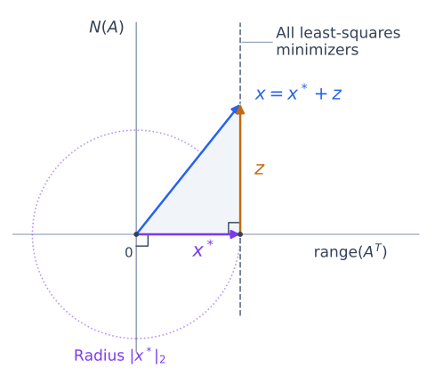

Least Squares and Minimum Norm Using SVD#
The QR solve on the preceding page assumes that \(A\) has full column rank. If its columns are dependent, different coefficient vectors can produce the same fitted vector. Least squares still has a solution, but the coefficients are no longer unique.
The normal-equations Cholesky solve and ordinary QR back substitution then need to be replaced by methods that account for this dependence. Rank-aware QR can also compute minimum-norm solutions; the LAPACK guide describes both QR-based and SVD-based solvers. Here we use the SVD to separate the directions determined by \(A\) from those in its null space.
Let \(A\in\mathbb{R}^{m\times n}\) have rank \(r\), and let \(b\in\mathbb{R}^m\). The construction applies to any matrix shape or rank.
The Minimum Norm Solution#
The minimum-norm least-squares solution \(x^*\) is chosen by two successive minimizations: first minimize \(\|Ax-b\|_2\), then minimize \(\|x\|_2\) among the vectors that achieve that smallest residual. These choices take place in different spaces.
First Choose the Closest Fitted Vector#
The fitted vector \(Ax\) lies in the column space of \(A\), a subspace of the output space \(\mathbb{R}^m\). The closest point to \(b\) is its orthogonal projection \(p\) onto this subspace. The residual \(b-p\) is perpendicular to the column space.

Fig. 12 The first minimization chooses \(p\), the fitted vector closest to \(b\). Any other fitted vector \(Ax\) adds a perpendicular displacement to the residual, increasing its squared length. Every least-squares minimizer therefore satisfies \(Ax=p\), even when its coefficients are not unique.#
Choose any minimizer \(x_p\), so \(Ax_p=p\). Adding a vector from the null space \(N(A)\) leaves the fit unchanged. Conversely, any other minimizer \(x\) satisfies \(A(x-x_p)=0\). Thus the complete set of minimizers is
Then Choose the Closest Coefficient Vector to the Origin#
The vectors in \(S\) belong to the input space \(\mathbb{R}^n\). They form a translated copy of the null space. Moving along this set changes the coefficients without changing the fitted vector or the residual.
The minimum-norm solution \(x^*\) is the point in \(S\) closest to the origin. It has no component along the null space: such a component would increase its length without improving the fit.


Fig. 13 The second minimization chooses the shortest coefficient vector among all minimizers. The line of minimizers is parallel to \(N(A)\). Its closest point \(x^*\) is perpendicular to that direction. Adding any nonzero \(z\in N(A)\) gives a longer vector with the same fit. The circle centered at the origin touches the solution set only at \(x^*\). The drawing shows a one-dimensional null space; the argument holds in higher dimensions.#
Proof. Why the Minimum-Norm Solution Is Perpendicular to the Null Space. By the four fundamental subspaces, the row space and null space are orthogonal complements. Decompose any minimizer as
Since \(Ax_{\mathrm{null}}=0\), the row-space part \(x_{\mathrm{row}}\) gives the same fit and is also a minimizer. The full solution set can therefore be written as \(x_{\mathrm{row}}+N(A)\).
For any \(z\in N(A)\), orthogonality gives
The first term is fixed. The second has its unique minimum at \(z=0\), so \(x^*=x_{\mathrm{row}}\). Thus the minimum-norm minimizer is unique and satisfies
The two perpendicularity conditions have different roles: \(b-Ax^*\) is perpendicular to the column space in \(\mathbb{R}^m\), while \(x^*\) is perpendicular to the null space in \(\mathbb{R}^n\).
Derivation using SVD#
If \(r=0\), then \(A=0\). Every coefficient vector gives the same residual norm \(\|b\|_2\), and the minimum-norm solution is \(x^*=0\). Otherwise, use the compact SVD, keeping only the positive singular values:
Here \(U_r\in\mathbb{R}^{m\times r}\) and \(V_r\in\mathbb{R}^{n\times r}\) have orthonormal columns. They span the column space and row space, respectively. The matrix \(\Sigma_r\in\mathbb{R}^{r\times r}\) is diagonal, with \(\sigma_1\ge\cdots\ge\sigma_r>0\).
The Least-Squares Condition#
The residual must be perpendicular to every column of \(U_r\). Substituting the compact SVD and using \(U_r^TU_r=I_r\) gives
This determines the row-space coefficients \(V_r^Tx\). Components in \(N(A)\) remain free because \(V_r^Tz=0\) for every null-space vector \(z\).
The Minimum Norm Condition#
To remove that freedom, require \(x^*\) to lie in the row space. Write \(x^*=V_ry\). Since \(V_r^TV_r=I_r\), the preceding equation becomes
Thus
The solution lies in the row space because it is a combination of the columns of \(V_r\). Its fitted vector and residual are
The SVD therefore makes both geometric choices explicit: \(U_r\) determines the closest fit, and \(V_r\) determines the coefficient vector perpendicular to the null space.
The Moore-Penrose Pseudoinverse#
Define
Then \(x^*=A^\dagger b\) is the unique minimum-norm least-squares solution. For \(A=0\), define \(A^\dagger\) to be the \(n\times m\) zero matrix. If \(A\) is square and invertible, \(A^\dagger=A^{-1}\).
Equivalence with the Normal Equations Solution when Full Rank#
If \(A\) has full column rank, then \(r=n\) and \(V_n\) is square and orthogonal. The compact SVD gives \(A^TA=V_n\Sigma_n^2V_n^T\) and \(A^T=V_n\Sigma_nU_n^T\). Therefore,
The formulas are identical in exact arithmetic. Their numerical implementations differ: the SVD solve avoids forming \(A^TA\) and squaring its condition number.
Computing the Solution#
Compute \(U_r^Tb\), divide each entry by its corresponding positive singular value, and multiply the result by \(V_r\). There is no need to form the full pseudoinverse.
Small positive singular values can amplify errors in the data. In floating-point arithmetic, deciding which singular values to treat as zero requires a tolerance that reflects rounding and, when relevant, uncertainty in the data. Discarding small singular values gives the minimum-norm solution for a truncated approximation to \(A\), not necessarily for the original matrix. The SVD section explains this approximation.